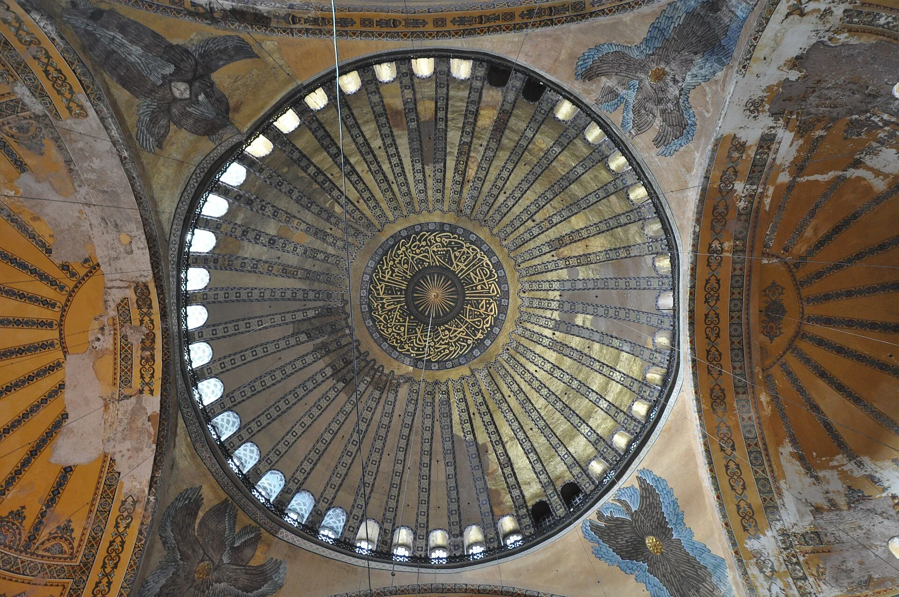
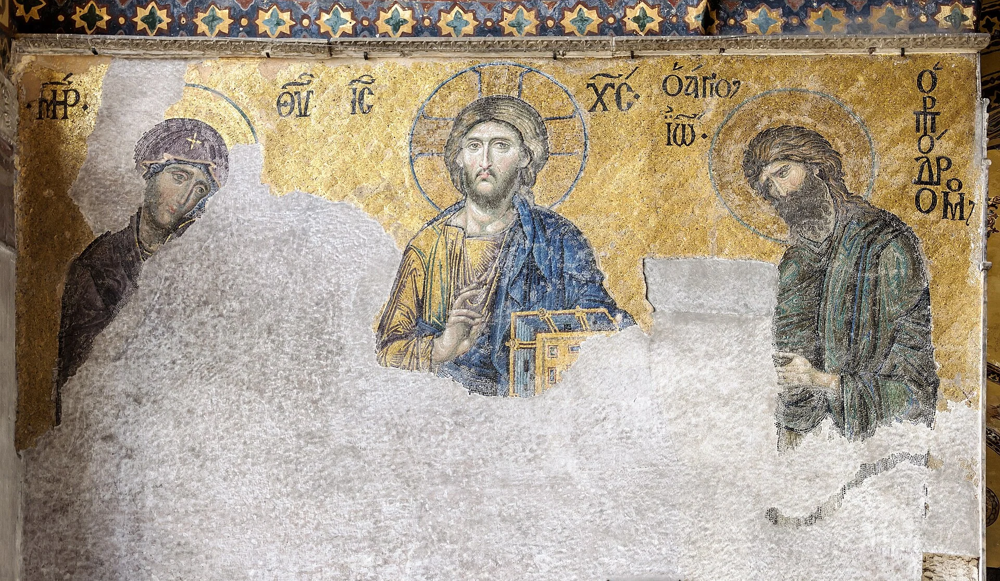
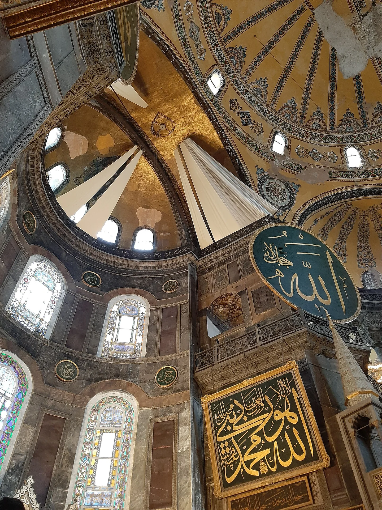
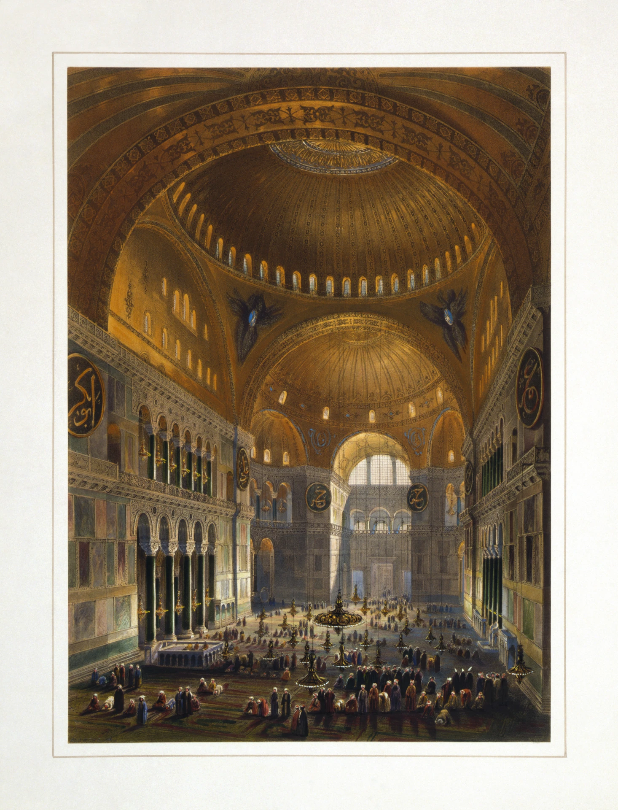

아직 펼치지 않은 카드
아직 펼치지 않은 카드
빛과 돌로 지은 집 · 2아야 소피아교회였다가, 이슬람 사원이었다가, 박물관이 된 건물이 있다면?아주아주 큰 둥근 지붕이야. 얼마나 클까?
537년 ~ 오늘이스탄불 · 튀르키예
아야 소피아
537년, 콘스탄티노폴리스에 하늘에 매단 듯한 둥근 지붕의 교회가 봉헌되었어요. 그 뒤 이슬람 사원, 박물관, 다시 이슬람 사원이 되며 1,500년 가까이 같은 자리를 지켰어요. 1852년의 그림과 오늘의 사진을 겹쳐, 같은 자리에서 무엇이 남고 무엇이 바뀌었는지 찾아보세요.
아주아주 큰 둥근 지붕이 있는 건물이야. 옛날 그림이랑 오늘 사진을 겹쳐 보면서 무엇이 그대로인지 찾아볼까?
검수 전 시안이에요(기준서 1판). 장면에는 기록에 있는 것만 옮겼고, 기록마다 다른 것은 따로 적었어요. 상상은 ‘눈 감고 상상해 보기’에만 썼어요.
시안 확인용카드 단계 미리 보기
1
하늘에 매단 둥근 지붕
537년, 유스티니아누스 황제가 새 교회를 봉헌했어요. 설계는 수학과 기하학에 밝은 안테미오스와 이시도로스가 맡았어요(스마트히스토리).
이 교회를 직접 본 역사가 프로코피우스는 둥근 지붕을 이렇게 적었어요.

“단단한 돌 위에 놓인 것이 아니라, 하늘에 매단 금빛 지붕이 공간을 덮고 있는 것 같다.”
프로코피우스, 『건축에 대하여』 1권(550년대) · 이 안내서가 옮김
지붕 밑동을 창이 촘촘히 둘러요. 금빛 면에 부딪힌 빛이 창 둘레를 흐리게 만들어, 지붕이 떠 있는 것처럼 보여요(스마트히스토리). 프로코피우스는 안에 들어서면 햇빛이 밖에서 드는 게 아니라 안에서 빛이 생겨나는 것 같다고도 적었어요.
처음 지붕은 지진으로 일부가 무너졌어요. 다시 지을 때는 처음보다 더 높게 올렸어요(스마트히스토리). 사진 네 귀퉁이에는 날개가 여럿인 천사들이 있어요. 왼쪽 위 천사만 얼굴이 보이고, 나머지 천사들은 얼굴 자리에 금빛 별이 붙어 있어요.
고개를 들면 아주 큰 둥근 지붕이야. 아래에 창문이 빙 둘러 있어!
물어보기창문이 몇 개쯤 될까? 함께 세어 볼까?
3
회반죽 아래의 얼굴들
이슬람 사원이 된 뒤, 사람 모습을 담은 모자이크는 차츰 회반죽과 그림 무늬 아래로 사라졌어요(알베르티스 윈도). 포사티 형제는 수리하다 드러난 모자이크를 먼저 보존한 뒤, 새 회반죽으로 덮고 그 위에 무늬를 그렸어요. 술탄은 두 점을 보이게 두려 했지만 신하들이 말렸다고 해요(비잔틴 문화 박물관).
1931년 6월 7일, 미국 학자 토머스 휘트모어가 모자이크를 다시 드러내도 좋다는 허락을 받았어요. 1934년 건물이 박물관으로 바뀐 뒤, 회반죽을 걷어 내는 일은 18년 동안 이어졌어요(덤바턴 오크스).

그렇게 다시 찾은 모자이크 가운데 하나가 남쪽 2층 회랑의 「데이시스」예요. 가운데 예수, 왼쪽 마리아, 오른쪽 세례 요한이 서 있어요(서섹스 대학 비잔틴 모자이크 자료·팔라스웹).
아랫부분은 떨어져 나가 회색 벽만 남았어요. 그래도 세 사람의 얼굴은 또렷이 남았어요.
회반죽 아래 숨어 있던 얼굴이야. 오랜 시간이 지나 다시 찾았대.
물어보기가운데 사람은 손으로 무엇을 하고 있어?
4
덮고 걷기를 되풀이한 얼굴
둥근 지붕 아래 천사들도 얼굴을 가리고 있었어요. 포사티 형제가 가린 천사 얼굴 하나가 2009년, 160년 만에 다시 드러났어요(알베르티스 윈도). 가로세로 1.5미터, 1미터쯤 되는 모자이크예요(더 내셔널). 첫 장면의 2012년 사진에서 얼굴이 보이는 왼쪽 위 천사가 그 천사예요.
2020년 7월, 이 건물은 다시 이슬람 사원이 되었어요. 튀르키예 대통령실 대변인은 기도하는 쪽(키블라)을 향한 성모와 가브리엘 모자이크를 기도 시간에 천으로 가리고, 기도 시간이 아닐 때는 걷어 둔다고 밝혔어요(아트 뉴스페이퍼).

사진 속 흰 천이 바로 그 천이에요. 동쪽 끝 반원 지붕, 성모와 아기 예수 모자이크 앞에 드리워 있어요.
회반죽으로, 별 모양 덮개로, 흰 천으로. 이 건물의 얼굴들은 쓰임이 바뀔 때마다 덮였다가 다시 드러나기를 되풀이했어요.
흰 천이 커튼처럼 걸려 있어. 그 뒤에 아기 예수와 엄마 마리아 그림이 있대.
물어보기커튼을 쳤다가 걷었다가 하는 곳, 우리 집에도 있어?
눈 감고 상상해 보기
둥근 지붕 아래 넓은 바닥에 서 있어요. 지붕 밑 창으로 든 빛이 금빛 면에 부딪혀 흩어져요. 낮은 등불들이 머리 위에 떠 있어요. 고개를 들면, 지붕이 정말 하늘에 매달린 것 같아요.
눈을 감아 봐. 아주 큰 둥근 지붕 아래야. 지붕이 둥둥 떠 있는 것 같아!
나의 자리
시간이 흐르며 내 삶의 쓰임도 바뀌어 왔나요? 그래도 변하지 않은 나의 중심은 무엇인가요?
아주 큰 둥근 지붕 아래에서 노래하면 어떤 소리가 날까?
마음에 닿는 한 줄을 고르거나 직접 써 보세요. 한 줄을 남기면 이 자리의 도장이 찍혀요. 이 기기에만 저장돼요.
더 깊이
궁금한 칸만 펼쳐 읽어도 괜찮아요.
알고 보면

포사티 형제의 그림책. 1852년 런던에서 펴낸 책에는 동쪽을 바라본 그림 말고도, 서쪽을 바라본 큰 마당, 2층 회랑, 바깥 모습 등 여러 장이 실렸어요(그리스 여행기 기록 보관소). 석판은 루이 하그가 새겼어요.
천사는 언제 그렸을까. 둥근 지붕 아래의 천사 모자이크는 1344년 지진 뒤, 14세기 중반에 만든 것으로 봐요(알베르티스 윈도).
프로코피우스가 본 것. 그는 이 교회에 들어서는 사람은 마음이 하느님께로 들려, 그분이 멀리 계시지 않다고 느낀다고 적었어요(『건축에 대하여』 1권).
기록마다 다른 점
데이시스를 만든 때. 서섹스 대학의 비잔틴 모자이크 자료는 ‘1261년?’(13세기)으로 적고, 팔라스웹은 12세기 말로 적어요.
포사티 형제는 어디 사람? 휘리예트 데일리 뉴스는 ‘이탈리아 형제’라고 적어요. 비잔틴 문화 박물관은 ‘이탈리아 말을 쓰는 스위스 지역’에서 났다고 하고, 그리스 여행기 기록 보관소는 형제가 1858년 스위스로 돌아갔다고 적어요.
직접 가 보기
확인한 날 · 2026년 11월 18일 · 바뀌기 쉬운 정보라 정기적으로 다시 확인해요
오늘 관광객은 2층 회랑 관람 길로 들어가요. 데이시스 모자이크는 남쪽 2층 회랑에 있어요. 바닥은 기도하는 곳이라 관람 길에 들어가지 않아요.
같은 자리, 170년 금박
1852년 그림과 2024년 사진을 끝까지 겹쳐 보면 카드에 금박이 입혀져요.
손잡이를 양쪽 끝까지 밀어 1852년과 2024년 겹쳐 보기
다시 문을 연 날 채색
둘 가운데 하나만 해도 카드가 채색돼요.
1849년 다시 문을 연 날, 가장 먼저 눈에 들어왔을 것 고르기
아이와 함께 ‘영화처럼 보기’를 끝까지 보기
근거 보기 (13)
- 프로코피우스 『건축에 대하여』 1권(로브 1940 번역, 퍼블릭 도메인) — 안테미오스와 이시도로스, 햇빛이 안에서 생겨나는 듯, 하늘에 매단 금빛 지붕, 일부러 낸 창, 마음이 하느님께 들림
- 스마트히스토리: 아야 소피아 — 532~537년, 수학과 기하학에 밝은 두 건축가, 지붕 밑 창이 촘촘해 떠 보임, 지진으로 일부 무너져 더 높게 다시 지음, 1934년 박물관
- 그리스 여행기 기록 보관소(아이카테리니 라스카리디스 재단): 포사티 석판화집 — 1847년 술탄 압뒬메지트, 2년 공사, 1849년 7월 13일 다시 엶, 1852년 런던, 1858년 스위스로
- 비잔틴 문화 박물관(테살로니키) 전시 안내 「포사티 형제의 아야 소피아」 — 이탈리아 말을 쓰는 스위스 지역 출신, 모자이크 보존 뒤 새 회반죽에 무늬, 술탄은 두 점을 남기려 했으나 신하들이 막음, 1847~1849년
- 휘리예트 데일리 뉴스 2010년 12월 6일(재게시) — 둥근 글씨판은 포사티 수리 때 걸림, 지름 약 8m, 서예가 카자스케르 이제트 에펜디, 800명 일꾼, 지붕 둘레 쇠사슬
- 알베르티스 윈도(미술사학자 모니카 보언) — 모자이크는 차츰 회반죽과 그림으로 덮임, 1847~1849년 회반죽으로 덮음, 천사는 1344년 지진 뒤 14세기 중반, 포사티가 가린 얼굴이 2009년 드러남
- 더 내셔널: 아야 소피아 모자이크 — 천사 모자이크 하나가 160년 만에 회반죽과 금속 가면 뒤에서 드러남, 1.5m×1m, 포사티가 마지막으로 봄
- 덤바턴 오크스: 블리스–타일러 편지 주석 — 1931년 6월 7일 휘트모어 허락, 1934년 세속화 뒤 18년 동안 더 드러냄, 1935년 박물관
- 서섹스 대학 비잔틴 문화사 센터 모자이크 자료 — 아야 소피아 남쪽 회랑 데이시스, 1261년?
- 팔라스웹(밥 애치슨): 남쪽 회랑의 데이시스 — 예수·성모·세례 요한, 12세기 말로 봄, 1930년대 휘트모어가 드러냄
- 아트 뉴스페이퍼 2020년 7월 20일 — 기도 시간에 키블라 쪽 성모·가브리엘 모자이크를 천으로 가림, 기도 밖에는 엶
- 던(로이터) 2020년 7월 24일 — 86년 만의 첫 금요 기도, 흰 천이 기도하는 사람들을 마주했을 마리아와 예수 그림을 가림
- 영어 위키백과: Hagia Sophia — 길잡이로만
그림·사진·소리 출처
- 사진: Jorge Láscar · CC BY 2.0 · 위키미디어 공용
- 그림: 가스파레 포사티 · 석판: 루이 하그 · 퍼블릭 도메인 · 위키미디어 공용(미국 의회 도서관) · 석판화 부분만 잘라 씀
- 사진: Julian Lupyan · 퍼블릭 도메인 · 위키미디어 공용
- 사진: Myrabella · 퍼블릭 도메인 · 위키미디어 공용
- 사진: ImanFakhri · CC BY-SA 4.0 · 위키미디어 공용
- 그림: 가스파레 포사티 · 석판: 루이 하그 · 퍼블릭 도메인 · 위키미디어 공용
- 사진: Adli Wahid · CC BY-SA 3.0 · 위키미디어 공용 · 일부 잘라 씀
‘처음 만나는 기독교 문화’의 깊은 카드예요. 카드 단계와 남긴 글은 이 기기에만 저장돼요.